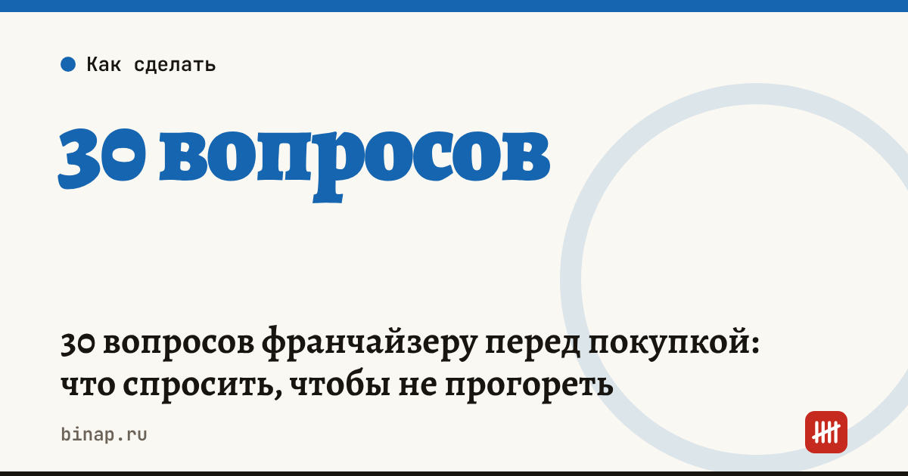

30 вопросов франчайзеру перед покупкой франшизы

Главное, что нужно узнать до покупки франшизы, — сколько реально зарабатывают и сколько закрываются действующие точки. Презентация франчайзера показывает лучшие цифры, а ответы на конкретные письменные вопросы и отчётность нескольких точек — настоящие. Ниже — 30 вопросов в пяти блоках и что делать, если франчайзер на них не отвечает.
Коротко
- Задавайте вопросы письменно: ответы в переписке потом можно сравнить с договором.
- Главный блок — деньги: вложения, выручка действующих точек, срок окупаемости на фактах, а не на прогнозе.
- Обязательно спросите, сколько точек закрылось за последние 2–3 года и почему.
- Поговорите минимум с тремя владельцами точек, которых выберете вы, а не франчайзер.
- Уклончивые ответы на вопросы о деньгах и закрытиях — повод остановиться.
Сроки, изменения и разборы для ИП и самозанятых — каждое утро в Telegram и MAX. Подпишитесь, чтобы не пропустить.
30 вопросов в пяти блоках
Деньги
- Сколько всего вложений до открытия: паушальный взнос, ремонт, оборудование, товар, оборотные деньги?
- Какой роялти и от чего он считается — от выручки или фиксированный?
- Есть ли другие обязательные платежи: маркетинговый фонд, программы, обучение?
- Какая средняя выручка точек в моём формате за последние 12 месяцев?
- Сколько точек вышли на окупаемость и за какой срок фактически?
- Какая минимальная выручка, при которой точка не уходит в минус?
Сеть
- Сколько точек открыто всего и сколько работает сейчас?
- Сколько точек закрылось за последние 2–3 года и почему?
- Сколько точек принадлежит самому франчайзеру?
- Можно ли получить контакты владельцев, которых выберу я?
- Есть ли точки в моём городе и как защищена моя территория?
- Как давно работает компания и кто её владельцы?
Поставки и операционка
- Обязан ли я закупать товар или сырьё только у франчайзера?
- Как формируются закупочные цены и как часто они меняются?
- Кто подбирает помещение и какие к нему требования?
- Какая программа учёта и касса обязательны и сколько они стоят?
- Сколько сотрудников нужно и кто их обучает?
- Что будет, если поставщик франчайзера сорвёт поставку?
Договор
- Это договор коммерческой концессии с регистрацией в Роспатенте?
- На какой срок заключается договор и как продлевается?
- На каких условиях можно выйти из договора и что я теряю?
- Можно ли продать точку и нужно ли согласие франчайзера?
- Какие штрафы предусмотрены и за что?
- Есть ли запрет на конкуренцию после выхода из сети?
Поддержка
- Что входит в запуск: проект, обучение, маркетинг на старте?
- Кто ведёт рекламу после открытия и за чей счёт?
- Как быстро отвечает поддержка и в каком формате?
- Как часто проводят проверки точек и что проверяют?
- Что франчайзер делает, если точка не выходит на план?
- Какие изменения в стандартах были за последний год и как их внедряли?
Список удобно отправить одним письмом. Готовые 30 вопросов, запрос отчётности действующих точек и вопросы владельцам — скачать бесплатно.
Как проверить ответы
Ответы франчайзера сравните с тем, что скажут владельцы точек, и с договором. Пример (расчёт редакции, цифры условные): франчайзер говорит о средней выручке 1,2 млн ₽ в месяц, а три владельца называют 700–900 тыс. ₽. Пересчитайте окупаемость по их цифрам в калькуляторе окупаемости франшизы — разница в сроке может быть в 1,5–2 раза.
Как проверить самого франчайзера по открытым данным — 12 пунктов. Что проверить в договоре — договор коммерческой концессии. Стоит ли вообще брать франшизу — франшиза или своё дело.
Все материалы — в разделе «Франчайзи».
Частые вопросы
Что делать, если франчайзер не даёт контакты владельцев? Найдите точки сами по адресам на сайте сети и поговорите с владельцами напрямую. Отказ раскрыть контакты — тревожный знак.
Можно ли верить прогнозу окупаемости из презентации? Только как ориентиру. Считайте окупаемость по фактической выручке действующих точек.
Сколько точек нужно опросить? Минимум три, лучше — из разных городов и с разным сроком работы.